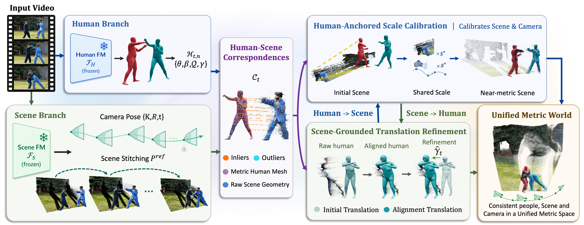
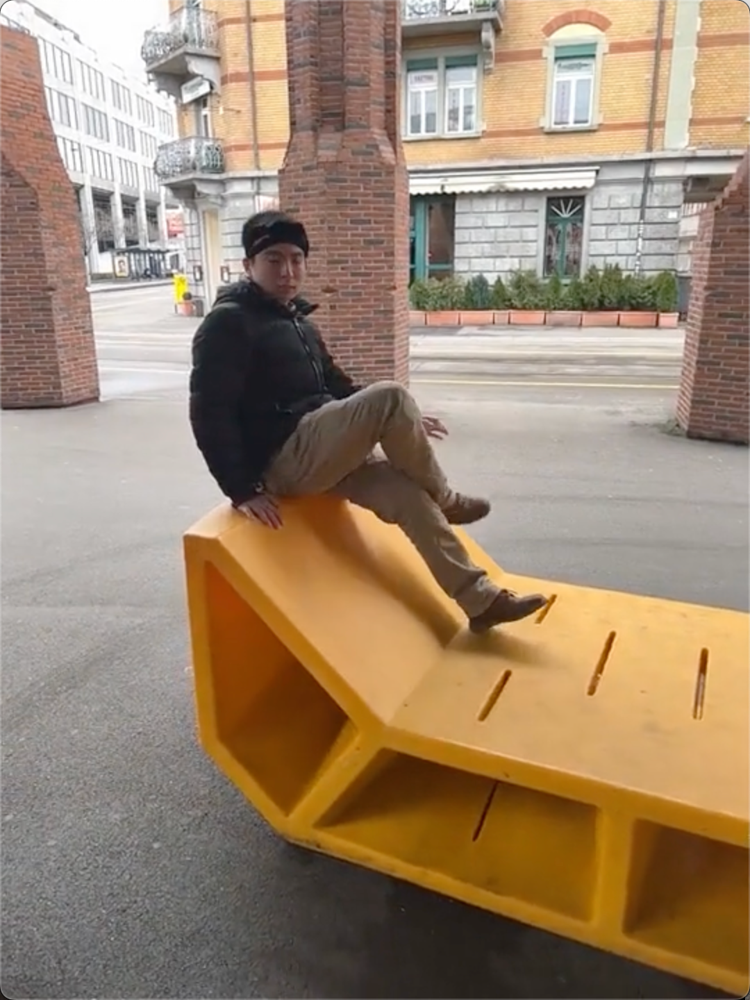

COHERE4DTraining-Free Metric Alignment for
Coherent 4D Human–Scene Reconstruction
Corresponding authors
Unable to load the teaser. Open video directly ↗
Abstract
We present COHERE4D, a training-free framework that geometrically aligns the outputs of independently pretrained human and scene foundation models to reconstruct a coherent, metric 4D world from monocular videos. Recent unified human–scene reconstruction methods largely learn metric scene scale and human alignment from training data, but generalize poorly to out-of-distribution scenes. Instead, COHERE4D performs test-time geometric alignment of human and scene predictions using dense pixel-aligned correspondences and RANSAC-based robust estimation. This alignment provides mutual geometric grounding: near-metric human meshes anchor the scale of scene geometry and camera translation, while scene geometry in turn refines human translation to improve global human trajectories. This test-time alignment requires no additional training and uses RANSAC-based robust estimation to suppress outliers caused by occlusion, background contamination, and erroneous depth. Across benchmarks, COHERE4D significantly outperforms prior methods in human–scene alignment, metric-scale scene and camera pose reconstruction, and global human motion estimation. Our training-free alignment method adds only about 4 ms/frame, while the overall inference reaches up to 10 FPS.
Human–Scene Reconstruction
Given a monocular RGB video, COHERE4D reconstructs multiple people, dense scene geometry, and camera motion in a shared metric 4D world.
Unable to load this case.
Method

Human–Scene Alignment Comparison
Comparison with Human3R and UniSH on human–scene alignment.

Unable to load this case.
Global Human Motion Comparison
- Ground truth
- Ours
- Human3R
- UniSH
Unable to load this case.
Metric Scene and Camera Motion Comparison
COHERE4D uses reconstructed humans as metric anchors to calibrate scene geometry and camera trajectories. Our calibration brings predictions from scene foundation models closer to the ground-truth metric scale.
- Ground truth
- Ours Scene
- Ours Camera
- Raw Scene
Unable to load this case.
Ablation Study
Effect of Human-anchored Scale Calibration
Scale calibration recovers the raw scene prediction toward the ground-truth metric scale.
- Ground truth
- Ours Scene
- VGGT-Ω raw scene
Unable to load this case.
Effect of Scene-grounded Translation Refinement
Translation refinement improves human–scene alignment and contact.
Unable to load this case.
More Occlusion Results
Unable to load this case.
More Interaction Results
Unable to load this case.
More Internet Video
Unable to load this case.
Citation
@misc{wang_cohere4d,
title = {{COHERE4D: Training-Free Metric Alignment for Coherent 4D Human--Scene Reconstruction}},
author = {Wang, Zhumei and Wang, Shaofei and An, Xiang and Pei, Mingtao and Huang, Siyuan}
}